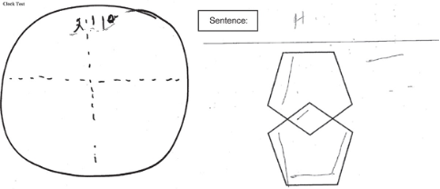

Simulation Strategy Training Lab
Description
Students will rotate in groups of 9 to engage in four different clinical scenarios to practice different components of cognitive rehabilitation discussed in class this term. Each scenario will present a different clinical profile and treatment objective. Groups will spend approximately 20 minutes in each scenario.
Groups
The four SimLab groups will combine 2 Review and Chew Groups.
- SimLab Group 1: R&C Groups 1 and 8
- SimLab Group 2: R&C Groups 2 and 7
- SimLab Group 3: R&C Groups 3 and 6
- SimLab Group 4: R&C Groups 4 and 5
Rotation Schedule
| Round | Time | Aaron | Amanda | Heidi | Jim |
|---|---|---|---|---|---|
| 1 | 8:15 - 8:35 | Group 1 | Group 2 | Group 3 | Group 4 |
| 2 | 8:38 - 8:58 | Group 4 | Group 1 | Group 2 | Group 3 |
| 3 | 9:01 - 9:21 | Group 3 | Group 4 | Group 1 | Group 2 |
| 4 | 9:21 - 9:45 | Group 2 | Group 3 | Group 4 | Group 1 |
Clinical Scenarios
1. Explain Assessment Results to the Daughter of a Severe TBI Client
Instructor: Amanda
Materials Needed:
BrICC goal writing worksheet (you will be creating a GAS goal)
To do before class:
- Review case study below
- Please see “your task” below and come to class prepared to engage in these tasks with PY and his daughter
- Optional: Please see RBANS handout on InfoCDS for more information on this assessment if needed (for your verbal description of PY’s results)
Background/Evaluation Results:
PY was a 53-year-old man found unconscious for an unknown duration outside his home and taken by ambulance to the hospital. Imaging revealed left subdural hematoma (SDH), extensive subarachnoid hemorrhage, and right temporal bone fracture. He underwent emergency craniotomy for SDH evacuation in the context of a decreasing Glasgow Coma Scale score, reflecting a decline in his level of consciousness based on objective evaluation of eye, verbal, and motor responses. He remained in the acute hospital setting for 2 weeks, followed by 2 weeks in acute inpatient rehabilitation. His posttraumatic amnesia was estimated at more than 4 weeks.
The initial outpatient speech/language assessment took place more than 1.5 years following the acute brain trauma. Comprehensive evaluation included an extensive interview with PY and his daughter regarding his injury and course of recovery, ongoing cognitive-communication limitations, current routine and day-to-day activities, use of compensatory strategies, additional mitigating factors (e.g., poor sleep, symptoms of depression), and patient/family goals for rehabilitation.
Prior to the injury, PY lived independently and was employed full time as a microchip-processing technician. Following the injury and subsequent recovery and rehabilitation, PY returned home to live with his wife and adult daughter. At the time of speech-language pathology (SLP) assessment, PY had not yet returned to work, but reported that employment was his primary goal. Although both he and his daughter reported significant improvement since his injury, he continued to require family assistance with many instrumental activities of daily living (IADLs) such as financial management, driving, shopping, meal preparation, and chores around the house. He primarily spent his time alone watching television, with weekly outings with family members.
PY initially denied cognitive-communication challenges, but ultimately reported having a difficult time “remembering stuff” including the television channels he preferred and the name of his dog. He also frequently forgot to eat at regular intervals. His daughter noted that she consistently observed PY having difficulty both initiating and completing tasks as well as decreased memory and word retrieval.
The Wechsler Test of Adult Reading (WTAR) and the Repeatable Battery for the Assessment of Neuropsychological Status (RBANS) were administered. His performance on the WTAR suggested premorbid intellectual functioning in the high average range (raw score = 44, standard score = 116). The results of the RBANS is shown in Table 43.1.
Table 43.1 Pretreatment performance on the Repeatable Battery for Neuropsychological Status (RBANS); initial evaluation in the outpatient clinic nearly 1.5 years following PY’s injury
| Scale | Index Score | Percentile Rank |
|---|---|---|
| Immediate memory | 65 | 1st |
| Visuospatial/constructional | 109 | 73rd |
| Language | 65 | 5th |
| Attention | 75 | 5th |
| Delayed memory | 60 | 0.4th |
| Total score | 70 | 2nd |
Additional Information: During the clinical interview, PY was unable to generate specific, personally relevant goals to target in therapy. He again expressed his long-term goal included returning to work, and also expressed a broad interest in becoming independent with tasks at home in the meantime. Further goal setting was heavily dependent on his daughter given the severity of PY’s cognitive deficits. PY’s daughter reported that it would be highly useful if PY could begin preparing his own breakfast, since there is the least amount of supervision and assistance around the house in the morning. She reported that currently, if she puts the toast in the toaster oven and sets out butter and jelly, he can finish making himself a piece of toast.
Your Task:
You are initiating your first outpatient treatment session with PY after his assessment. His daugther is present for the session.
- Provide verbal description of the RBANS score to PY and his daugther, including which cognitive domains are most impacted and how this might correlate with PY’s reported deficits.
- Initiate collaborative goal setting using your GAS worksheet, keeping in mind what is stated above under “additional information”.
3. Dementia Client Treatment Session
Instructor: Aaron
Materials Needed:
Develop appropriate reminiscence materials
To do before class:
- Review case study below
- Please see “your task” below and come to class prepared to engage the patient in the designated tasks
Background/Evaluation Results:
Michael was referred to your specialty memory clinic at the age of 58 with a 2-year history of repetitiveness, memory loss, and executive function loss. Magnetic resonance imaging scan at age 58 revealed mild generalized cortical atrophy. He is white with 2 years of postsecondary education. Retirement at age 48 from employment as a manager in telecommunications company was because family finances allowed and not because of cognitive challenges with work. Progressive cognitive decline was evident by the report of deficits in instrumental activities of daily living performance over the past 9 months before his initial consultation in the memory clinic. Word finding and literacy skills were noted to have deteriorated in the preceding 6 months according to his spouse. Examples of functional losses were being slower in processing and carrying out instructions, not knowing how to turn off the stove, and becoming unable to assist in boat docking which was the couple’s pastime. He stopped driving a motor vehicle about 6 months before his memory clinic consultation. His past medical history was relevant for hypercholesterolemia and vitamin D deficiency. He had no surgical history. He had no history of smoking, alcohol, or other drug misuse. Laboratory screening was normal. There was no first-degree family history of presenile dementia. Testing has resulted in a medical diagnosis of early onset dementia. Neurocognitive assessment at the first clinic visit revealed a Mini Mental State Examination (MMSE) score of 14/30; poor verbal fluency (patient was able to produce only 5 animal names and 1 F-word in 1 minute) as well as poor visuospatial and executive skills (see below). He had fluent speech without semantic deficits. His neurological examination was pertinent for normal muscle tone and power, mild ideomotor apraxia on performing commands for motor tasks with no suggestion of cerebellar dysfunction, normal gait, no frontal release signs. His speech was fluent with obvious word finding difficulties, but with no phonemic or semantic paraphrasic errors. His general physical examination was unremarkable without evidence of presenile cataracts. He had normal hearing. There was no evidence of depression or psychotic symptoms. Michael has trouble remembering important dates (anniversary - 6/16) and locating essential tools/objects, such as his glasses (beside table). Basic information has also been challenging for retention, including his home address (4321 Sesame St.). He has always enjoyed maintaining a succulent garden and used to participate in a local string quartet. He and his spouse are financial sponsors of a local community theatre.

Your Task:
- Develop an appropriate target to use for spaced retrieval training during the session
- Measure spaced retrieval performance
- Use reminiscence therapy materials as the distractor between spaced retrieval during longer intervals
Resources:
4. Concussion Client Discharge Session
Instructor: Jim
Materials Needed:
The following psychoeducation resources may be helpful to review and share with the client:
To do before class:
- Review case study below
- Please see “your task” below and come to class prepared to engage in these tasks with RJ.
Client Profile:
Clinical History and Description: RJ, a 23-year-old male Army veteran, presented 2 years after sustaining a mild TBI related to an armored vehicle accident while under fire in Afghanistan. He experienced no loss of consciousness, but reported feeling dazed. He experienced headache and trouble concentrating, symptoms that resolved within 2 days allowing him to return to duty without further complaint. Approximately 6 months after his return to the United States, he began experiencing problems with concentration and memory that coincided with the diagnosis of PTSD, anxiety, depression, sleep disturbance, and chronic pain (headache, low back pain). At the time of evaluation by the VA Polytrauma Team, RJ was a full-time student in a bachelor’s degree program in psychology and has the long-term goal of completing a master’s degree in industrial and organizational psychology. He expressed concern that cognitive challenges were undermining his academic performance. Specifically, he reported significant distractibility when listening to lectures, taking notes, and struggling to recall information during examinations.
Clinical Testing: Interview: The clinician and veteran engaged in an interview/conversation in which the veteran endorsed cognitive concerns described above. He described how these difficulties impacted daily functioning at home and school, and his expectations for therapy. He also described treatment he was receiving for comorbid conditions.
Testing included a combination of objective testing and self-report measures including the Repeatable Battery for Assessment of Neuropsychological Status 1 (RBANS). The RBANS is a cognitive screening tool with excellent reliability and validity. Performance on measures of attention, immediate memory, visual/constructional skills, and language were within the normal range. Mild impairment in delayed verbal memory was observed (Table 74.1).
Repeatable Battery for the Assessment of Neuropsychological Status Self-report measures, the Behavioral Rating Inventory of Executive Functions-Adult 2 (BRIEF-A), and the Return to School Needs Assessment 3 were completed. RJ reported the perception of impaired metacognitive aspects of executive functions, including severe challenges in working memory and milder challenges in task monitoring, planning and organization, and initiation (Table 74.2). He was particularly concerned about academic readiness, and specifically (1) focusing on lectures, (2) taking good notes in class, and (3) remembering what he had learned when taking tests (Table 74.3). He confirmed significant difficulty in these areas. He was receiving mostly Cs in his classes and expressed concern that he would not have a sufficient GPA for graduate school.
Table 74.1 RJ RBANS Results
| Scale | Index Score | Percentile Rank |
|---|---|---|
| Immediate memory | 125 | 96th |
| Visuospatial/constructional | 100 | 50th |
| Language | 113 | 81st |
| Attention | 113 | 81st |
| Delayed memory | 81 | 10th |
Table 74.2 BRIEF-A Results
| Index | T-Score | Comment |
|---|---|---|
| Behavioral Index | 64 | Reflects a perception of mild challenges in the areas of inhibition of behavior and the ability to shift behavioral set |
| Metacognitive Index | 72 | Reflects a perception of significant challenges in the areas of working memory, task monitoring, and planning and organization; and mild challenges in the area of initiation |
| Global Executive Component | 72 | Reflects a perception of significant challenges in executive functions |
| Note: T-Scores 65 or greater are considered clinically significant |
Table 74.3 Return to School Needs Assessment
| Level | Behavior |
|---|---|
| Moderately degree of difficulty | Staying awake in class; listening to instructor and taking notes at the same time; and keeping emotions under control toward instructors and classmates |
| Quite a bit of difficulty | Maintaining attention in class, when reading, when at work or school; organizing notes from lecture; remembering to bring completed assignments to class; working with others on group assignments; writing in a clear manner; keeping a balance between school and other life activities |
| Extreme degree of difficulty | Selecting a topic for a paper, recalling learned information when taking a test, and focusing while reading a home |
Testing Interpretation: RJ presented with normal performance on objective cognitive measures with the exception of mild impairment in delayed verbal memory. However, self-Report Measures identified significant challenges in a variety of cognitive areas. This disparity between objective and self-report instruments is frequently seen and does not necessarily suggest that RJ did not put forth adequate effort on the objective measures. In this case, the veteran had shown excellent effort during testing. His symptoms were validated and discussed in terms of potential response to cognitive rehabilitation strategies.
Description of Problem and Recommended Treatment: RJ identified challenges with working memory and distractibility in particular. He identified distractibility as the underlying cognitive challenge impacting his ability to focus on lectures and take complete notes in class. His method of study, reading and rereading notes without self-testing, raised questions as to whether he had sufficient judgment of learning to discriminate learned from unlearned material in his notes.
Initial treatment focused on education regarding the nature of his injury so as to foster positive expectations for recovery and to promote more accurate attribution of symptoms to mental health conditions rather than to a mild brain injury. Misattribution of symptoms as a result of brain injury can maintain the perception of cognitive disability. Cognitive rehabilitation was provided in the context of a dynamic coaching approach in which RJ had the autonomy to select goals and strategies of treatment. The clinician served as a coach to model and explicitly teach self-regulatory skills critical to problem-solving as he implemented strategies at school. RJ selected self-talk, silently telling himself to “focus” at intervals during lectures, as a metacognitive strategy to enhance attention to lectures. He selected the use of a smartpen, an assistive technology strategy that audio records lectures in such a way that the recording is anchored to specific locations on his notes, as a strategy to efficiently retrieve missed notes after the lecture. He took notes using the Cornell Note Taking method and used key words on the left side of his notes to self-test learning after a delay, enabling him to more accurately identify learned from unlearned information.
Goal: Increase the weekly average number of minutes per week focused during Chemistry lecture.
Note: Chemistry lecture is twice per week for 60 minutes.
Outcome: Testing: Performance on objective testing using the RBANS at the end of treatment did not significantly differ from initial evaluation. However, RJ’s self-report measures showed significant symptom reduction. Although he continued to report challenges with working memory on self-report measures, the magnitude of those challenges was greatly reduced and the metacognitive strategy portion of the BRIEF-A was below the threshold for impaired performance. His perceived academic difficulty also decreased on the Return to School Needs Inventory. He reported mild difficulty focusing on lectures, mild difficulty remembering what he had learned when taking tests, and no difficulty taking good notes in class.
Academic performance: RJ’s grades improved from mostly Cs to mostly As with some Bs. His professors commented on the improvements in the quality of his work and he felt confident in his ability to achieve his academic goals. The effectiveness of his strategies remained stable during times of increased stress, as when buying a house, and he reported continued success in school at 3- and 6-month follow-up appointments.
Additional measurements: The following plots display data collected during each session. The first plot represents RJ’s progress on his treatment goal, while the second and third plots represent his perceived frequency of use of the self-talk strategy and helpfulness of it.
Status Tracking Measurement: Measurement represents weekly average of two 60-minute lectures.
Frequency of Strategy Use:
- Strategy planned to be implemented in 15-minute intervals
- Measurement represents average across two 60-minute lectures
Perceived Strategy Helpfulness:
- 1 = Not Helpful at All
- 2 = Not Helpful
- 3 = Somewhat Helpful
- 4 = Helpful
- 5 = Very Helpful
Your Task:
You are conducting your final session with RJ. Using all available data (e.g., improvements on BRIEF-A and Return to School Assessment, weekly session data), engage RJ in a collaborative discussion to prepare him for discharge.
Things to consider:
- What psychoeducation material would be useful to reinforce?
- Promote RJ’s ability to generalize strategy use to all classes
- Promote RJ’s ability to be his “own clinician” through independent self-monitoring

2. Social Communication Client (Conversation Sample)
Instructor: Heidi
Zoom Link
Materials Needed:
Be ready to score the Adapted MPC and MSC Scales during the simulation; print out a hard copy or have them accessible on your computer, phone or tablet
To do before class:
Background/Evaluation Results:
Sandy is a 39-year old woman who experienced a closed frontal lobe injury a year and a half ago in a bicycle accident. She is the mother of three children (aged 14, 11, and 8) and works as a freelance animator. Sandy completed both inpatient and outpatient rehabilitation services after her injury, and has improved in language, attention, and problem solving since the accident. She has also been able to gradually increase the number of animation projects she takes on, so that now she is completing almost as many projects per month as before the injury. However, her spouse, siblings, and children report certain social communication changes that have not been improving. They encouraged Sandy to receive an evaluation for social communication at your clinic because of her increased talkativeness, impatience and intolerance of others, impulsivity, socially inappropriate comments, decreased facial expression, and responding inappropriately to social cues. Her children complained that their mother does not seem to listen to them anymore, and that her “lack of a filter” when talking with others frequently embarrassed them. Sandy’s two siblings, who previously enjoyed a close relationship with her, also expressed that it was difficult for their families to get together anymore since Sandy tended to take over the conversation and not show as much empathy toward them as she had before the injury.
Your Task:
As part of the social communication evaluation, we are going to take a 6-minute conversation sample between Sandy and one of her siblings who accompanied her to the evaluation.
One of you will participate in the conversation sample as Sandy’s sibling. For this conversation sample, we will use the following “purposeful conversation” prompt:
Together, we want you to come up with a list of situations you are expecting to face over the next four weeks or so where communication is important to you both. It might be something routine like a family dinner or social event. In the next 5 minutes, come up with a list of these situations together and WHY they are important.” (Togher et al., 2010).
All remaining group members will score the Adapted MPC and MSC Scales for this conversation. Note that the first scale is the Measure of Skill in Supported Conversation (MSC), which includes both A. “Acknowledging Competence” and B. “Revealing Competence”. This is to be used for rating the communication partner (in this case example, Sandy’s sibling). The second scale is the Measure of Participation in Conversation (MPC) which includes both A. “Interaction” and B. “Transaction”. This will be used for rating the communication of the person with a brain injury (in this case example, Sandy).
After the conversation sample, be prepare to share your ratings and discuss!